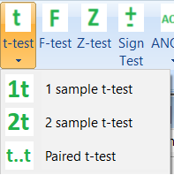

Once an app is developed, it is best to add it to a ribbon page for convenience. In the figure, we see 3 pages, namely "Home", "Workbook" and "Apps". At the "Apps" page, there are 2 panels, namely "Process Engineering" and "Statistics" and each panel has a number of buttons.
Addition of a new page or editing an existing one is done through the manifest.xml file. The main idea is that clicking on a button executes a function which shows an app. Therefore, first of all we need to make a button and then assign a function to the button.

The button itself can be either directly added to a panel or become part of a dropdown. A dropdown button, namely "t-test, is shown in the figure. Clicking on a dropdown button shows a menu with entries, where each entry is considered as a button. Therefore, conceptually a dropdown button is a container for buttons.
Now that it is understood that it is possible to have many pages, which can have many panels, which can have many buttons, let's see how we can create using manifest.xml file. Currently, the XML file have the following tags (note the conceptual difference between the words, make and add):
To be able to add a dropbutton similar to the one shown in the above figure (with only two entries) to the "Apps" page and to the "Statistics" panel, we would use the following XML structure:
<RIBBON>
<PAGE TITLE="Apps">
<BUTTON NAME="ttest1sample" TITLE="1
sample t-test">
<FUNCTION>std.app.TTest1Sample</FUNCTION>
<IMAGE>images/t_test1sample.png</IMAGE>
</BUTTON>
<BUTTON
NAME="ttest2sample" TITLE="2 sample t-test">
<FUNCTION>std.app.TTest2Sample</FUNCTION>
<IMAGE>images/t_test2sample.png</IMAGE>
</BUTTON>
<DROPBUTTON
NAME="ttest" TITLE="t-test">
<IMAGE>images/t_test.png</IMAGE>
<ADD>ttest1sample</ADD>
<ADD>ttest2sample</ADD>
</DROPBUTTON>
<PANEL
TITLE="Statistics">
<ADD>ttest</ADD>
</PANEL>
</PAGE>
</RIBBON>